CCC network and flow plots
Usage
CCCNetworkPlot(
srt,
method = NULL,
condition = NULL,
dataset = 1,
comparison = c(1, 2),
plot_type = c("circle", "circle_focused", "chord", "lr_chord", "gene_chord", "pathway",
"individual_lr", "individual", "individual_outgoing", "individual_incoming", "arrow",
"sigmoid", "bipartite", "embedding_network", "diff_network", "diffusion"),
display_by = c("aggregation", "interaction"),
sender.use = NULL,
receiver.use = NULL,
ligand.use = NULL,
receptor.use = NULL,
interaction.use = NULL,
group.by = NULL,
reduction = NULL,
dims = c(1, 2),
signaling = NULL,
pairLR.use = NULL,
slot.name = "net",
thresh = 0.05,
measure = c("weight", "count"),
value = "sum",
top_n = 20,
ligand = NULL,
receptor = NULL,
reg.by = NULL,
reg_palette = "Set1",
reg_palcolor = NULL,
expr.by = NULL,
layout = c("circle", "hierarchy", "chord", "kk", "fr", "nicely", "lgl", "mds",
"graphopt"),
link_curvature = 0.2,
link_alpha = 0.6,
edge_value = c("sum", "mean", "max", "count"),
edge_threshold = 0,
edge_size = c(0.5, 1.8),
edge_color = NULL,
edge_alpha = 0.6,
edge_line = c("curved", "straight"),
edge_curvature = 0.2,
directed = FALSE,
arrow_type = "closed",
arrow_angle = 20,
arrow_length = grid::unit(0.02, "npc"),
node_size = 5,
node_alpha = 0.9,
palette = "Chinese",
palcolor = NULL,
cell_palette = NULL,
cell_palcolor = NULL,
link_palette = NULL,
link_palcolor = NULL,
title = NULL,
subtitle = NULL,
legend.position = "right",
legend.direction = "vertical",
legend.title = NULL,
font.size = 10,
theme_use = "theme_scop",
theme_args = list(),
verbose = TRUE,
...
)Arguments
- srt
A
Seuratobject.- method
Communication result type to use.
- condition
Result name or comparison name.
- dataset
Dataset index or name.
- comparison
Comparison indices or names.
- plot_type
Plot type. One of
"circle","chord","pathway","individual_lr","arrow","sigmoid","bipartite","embedding_network", or"diff_network".- display_by
Whether to summarize by
"aggregation"or"interaction".- sender.use
Sender cell types to keep.
- receiver.use
Receiver cell types to keep.
- ligand.use
Ligands to keep.
- receptor.use
Receptors to keep.
- interaction.use
Interaction names to keep.
- group.by
For
plot_type = "embedding_network": metadata column used to define cell groups. IfNULL, the grouping stored in the CCC result is used when available.- reduction
For
plot_type = "embedding_network": dimensional reduction to use. IfNULL, the default reduction is used.- dims
For
plot_type = "embedding_network": dimensions to plot.- signaling
Signaling pathway to focus on.
- pairLR.use
Specific ligand-receptor pair(s) to keep.
- slot.name
CellChat slot name.
- thresh
Significance threshold used when extracting communication results.
- measure
Summary measure for CellChat objects.
- value
Value column or summary statistic to use.
- top_n
Number of top records to retain.
- ligand
For
plot_type = "bipartite": the ligand name to focus on. IfNULL, the ligand with the highest total score is used.- receptor
For
plot_type = "bipartite": optional receptor names to restrict to. IfNULL, all receptors paired withligandare shown.- reg.by
For
plot_type = "bipartite": optional metadata column insrtused to color edges by regulation status (e.g. up/down). IfNULL, edges are colored by sender cell type.- reg_palette
For
plot_type = "bipartite": named character vector or palette name for regulation categories.- reg_palcolor
For
plot_type = "bipartite": custom colors for regulation palette.- expr.by
For
plot_type = "bipartite": optional metadata or score column used to scale edge line width. IfNULL, all edges have equal width.- layout
Layout used for graph-based network views.
"chord"can also be requested viaplot_type = "circle"for backward compatibility.- link_curvature
Curvature used for circle-like differential links and flow edges.
- link_alpha
Alpha used for network edges.
- edge_value
Aggregation statistic for network edges.
- edge_threshold
Minimum edge value to keep.
- edge_size
Range used for scaling edge widths.
- edge_color
Optional edge color override. For differential networks, this may also be a length-2 vector for negative/positive changes.
- edge_alpha
Alpha used for embedding-network edges.
- edge_line
Edge geometry for
plot_type = "arrow","sigmoid", and"embedding_network".- edge_curvature
Curvature used for curved flow/embedding edges.
- directed
Whether to draw arrows for directed networks.
- arrow_type
Arrow head type passed to
grid::arrow().- arrow_angle
Arrow head angle passed to
grid::arrow().- arrow_length
Arrow length passed to
grid::arrow().- node_size
Base node size.
- node_alpha
Node alpha.
- palette
Main palette name.
- palcolor
Main custom palette colors.
- cell_palette
Cell annotation palette name.
- cell_palcolor
Custom cell annotation colors.
- link_palette
Link palette name.
- link_palcolor
Custom link palette colors.
- title
Plot title.
- subtitle
Plot subtitle.
- legend.position
Legend position.
- legend.direction
Legend direction.
- legend.title
Legend title.
- font.size
Base font size.
- theme_use
Theme function used for styling.
- theme_args
Arguments passed to the theme function.
- verbose
Whether to print messages.
- ...
Additional plot-specific options. For chord plots,
reduce,max.groups,small.gap,big.gap, andlab.cexcan be used to adjust the CellChat-like chord layout.
Examples
data(pancreas_sub)
pancreas_sub <- standard_scop(pancreas_sub)
#> ℹ [2026-05-24 14:33:28] Start standard processing workflow...
#> ℹ [2026-05-24 14:33:29] Checking a list of <Seurat>...
#> ! [2026-05-24 14:33:29] Data 1/1 of the `srt_list` is "unknown"
#> ℹ [2026-05-24 14:33:29] Perform `NormalizeData()` with `normalization.method = 'LogNormalize'` on 1/1 of `srt_list`...
#> ℹ [2026-05-24 14:33:29] Perform `Seurat::FindVariableFeatures()` on 1/1 of `srt_list`...
#> ℹ [2026-05-24 14:33:30] Use the separate HVF from `srt_list`
#> ℹ [2026-05-24 14:33:30] Number of available HVF: 2000
#> ℹ [2026-05-24 14:33:30] Finished check
#> ℹ [2026-05-24 14:33:30] Perform `Seurat::ScaleData()`
#> ℹ [2026-05-24 14:33:31] Perform pca linear dimension reduction
#> ℹ [2026-05-24 14:33:31] Use stored estimated dimensions 1:23 for Standardpca
#> ℹ [2026-05-24 14:33:31] Perform `Seurat::FindClusters()` with `cluster_algorithm = 'louvain'` and `cluster_resolution = 0.6`
#> ℹ [2026-05-24 14:33:31] Reorder clusters...
#> ℹ [2026-05-24 14:33:32] Skip `log1p()` because `layer = data` is not "counts"
#> ℹ [2026-05-24 14:33:32] Perform umap nonlinear dimension reduction
#> ℹ [2026-05-24 14:33:32] Perform umap nonlinear dimension reduction using Standardpca (1:23)
#> ℹ [2026-05-24 14:33:34] Perform umap nonlinear dimension reduction using Standardpca (1:23)
#> ✔ [2026-05-24 14:33:37] Standard processing workflow completed
pc1 <- Seurat::Embeddings(pancreas_sub, "Standardpca")[, 1]
ct <- as.character(pancreas_sub$CellType)
ct_medians <- tapply(pc1, ct, median)
pancreas_sub$Condition <- ifelse(
pc1 > ct_medians[ct],
"ConditionA",
"ConditionB"
)
pancreas_sub <- RunCellChat(
pancreas_sub,
group.by = "CellType",
group_column = "Condition",
group_cmp = list(c("ConditionA", "ConditionB")),
species = "Mus_musculus"
)
#> ℹ [2026-05-24 14:33:37] Start CellChat analysis
#> ℹ [2026-05-24 14:33:42] Processing condition: "ConditionA"
#> [1] "Create a CellChat object from a data matrix"
#> Set cell identities for the new CellChat object
#> The cell groups used for CellChat analysis are Ductal, Ngn3-high-EP, Endocrine, Ngn3-low-EP, Pre-endocrine
#> The number of highly variable ligand-receptor pairs used for signaling inference is 542
#> triMean is used for calculating the average gene expression per cell group.
#> [1] ">>> Run CellChat on sc/snRNA-seq data <<< [2026-05-24 14:33:43.817079]"
#> [1] ">>> CellChat inference is done. Parameter values are stored in `object@options$parameter` <<< [2026-05-24 14:34:02.440171]"
#> ℹ [2026-05-24 14:34:02] Processing condition: "ConditionB"
#> [1] "Create a CellChat object from a data matrix"
#> Set cell identities for the new CellChat object
#> The cell groups used for CellChat analysis are Endocrine, Ngn3-high-EP, Ductal, Ngn3-low-EP, Pre-endocrine
#> The number of highly variable ligand-receptor pairs used for signaling inference is 597
#> triMean is used for calculating the average gene expression per cell group.
#> [1] ">>> Run CellChat on sc/snRNA-seq data <<< [2026-05-24 14:34:04.521886]"
#> [1] ">>> CellChat inference is done. Parameter values are stored in `object@options$parameter` <<< [2026-05-24 14:34:25.466063]"
#> ℹ [2026-05-24 14:34:25] Merging CellChat objects for comparison "ConditionA_vs_ConditionB"
#> Merge the following slots: 'data.signaling','images','net', 'netP','meta', 'idents', 'var.features' , 'DB', and 'LR'.
#> ✔ [2026-05-24 14:34:25] CellChat analysis completed
CCCNetworkPlot(
pancreas_sub,
method = "CellChat",
condition = "ConditionA",
plot_type = "circle",
display_by = "aggregation",
value = "count",
top_n = 20
)
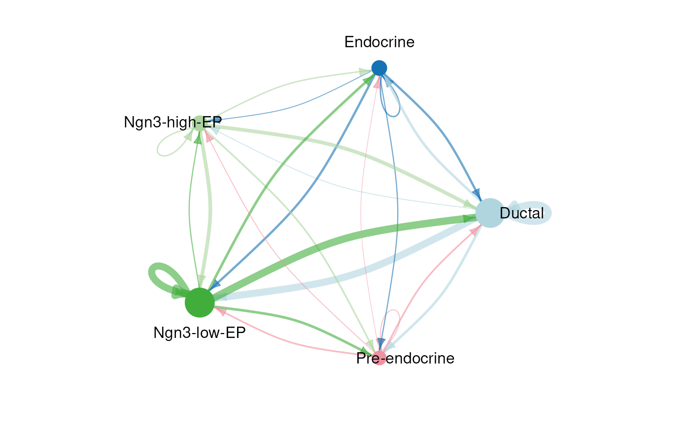
 CCCNetworkPlot(
pancreas_sub,
method = "CellChat",
condition = "ConditionA",
plot_type = "circle",
display_by = "aggregation",
value = "weight",
top_n = 20
)
CCCNetworkPlot(
pancreas_sub,
method = "CellChat",
condition = "ConditionA",
plot_type = "circle",
display_by = "aggregation",
value = "weight",
top_n = 20
)

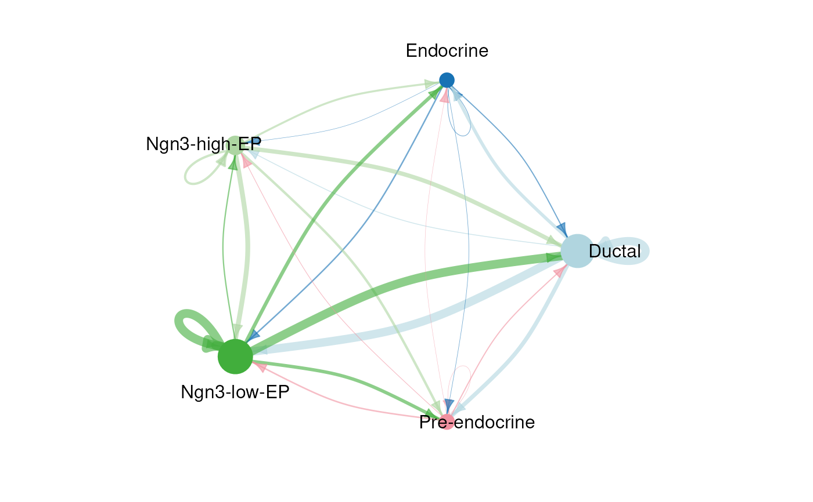
CCCNetworkPlot(
pancreas_sub,
method = "CellChat",
condition = "ConditionA",
plot_type = "chord",
display_by = "aggregation",
top_n = 12
)
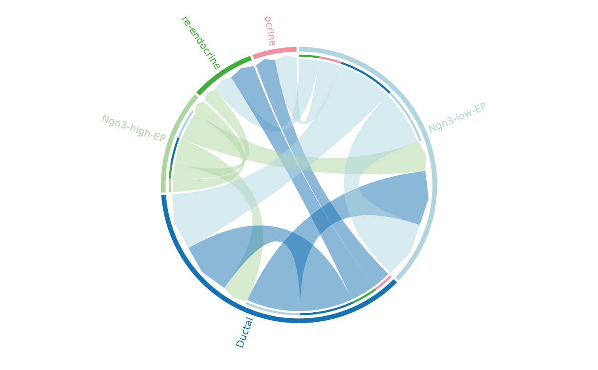
 CCCNetworkPlot(
pancreas_sub,
method = "CellChat",
condition = "ConditionA",
plot_type = "arrow",
display_by = "interaction",
sender.use = "Ductal",
receiver.use = "Ngn3-low-EP",
edge_line = "straight",
directed = TRUE,
top_n = 3
)
CCCNetworkPlot(
pancreas_sub,
method = "CellChat",
condition = "ConditionA",
plot_type = "arrow",
display_by = "interaction",
sender.use = "Ductal",
receiver.use = "Ngn3-low-EP",
edge_line = "straight",
directed = TRUE,
top_n = 3
)
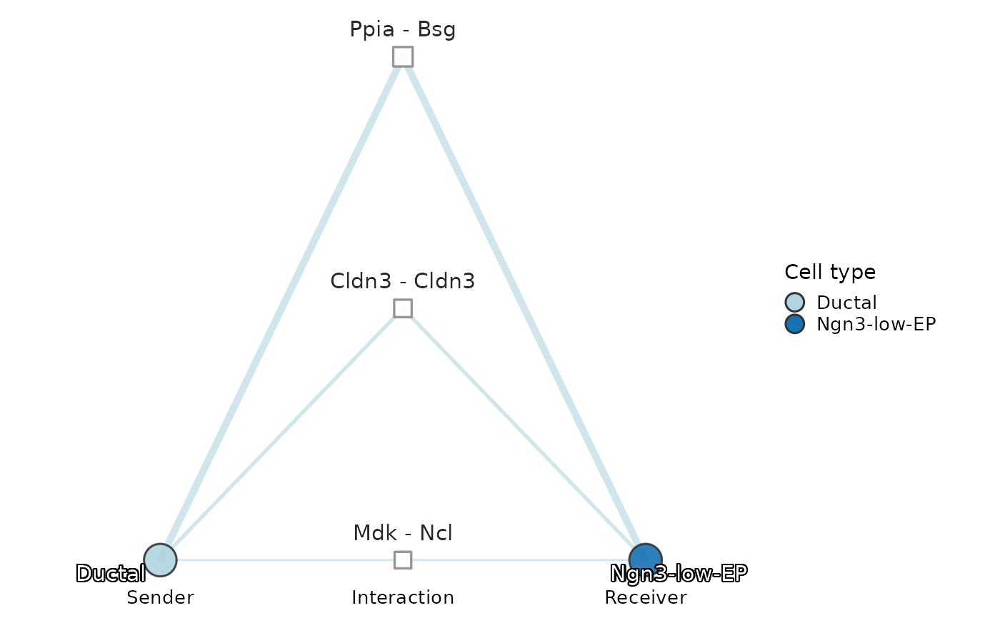
CCCNetworkPlot(
pancreas_sub,
method = "CellChat",
condition = "ConditionA",
plot_type = "arrow",
display_by = "interaction",
top_n = 20
)
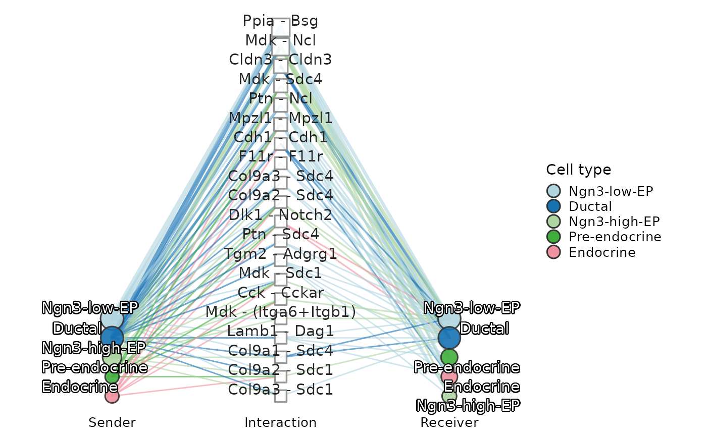
CCCNetworkPlot(
pancreas_sub,
method = "CellChat",
condition = "ConditionA",
plot_type = "sigmoid",
display_by = "interaction",
top_n = 20
)
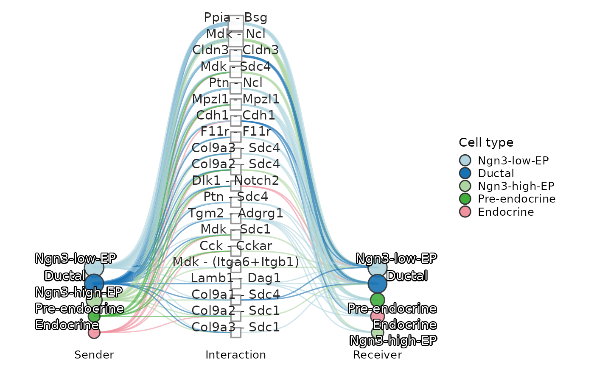
CCCNetworkPlot(
pancreas_sub,
method = "CellChat",
condition = "ConditionA",
plot_type = "bipartite",
display_by = "aggregation",
top_n = 20
)
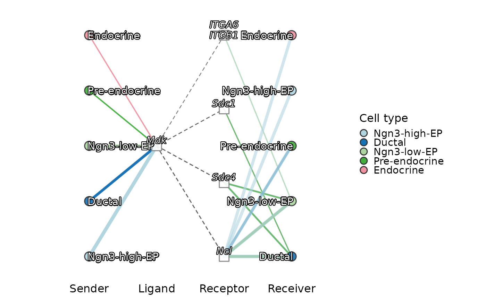
CCCNetworkPlot(
pancreas_sub,
method = "CellChat",
condition = "ConditionA",
plot_type = "embedding_network",
group.by = "CellType",
reduction = "UMAP",
top_n = 20,
label = TRUE
)
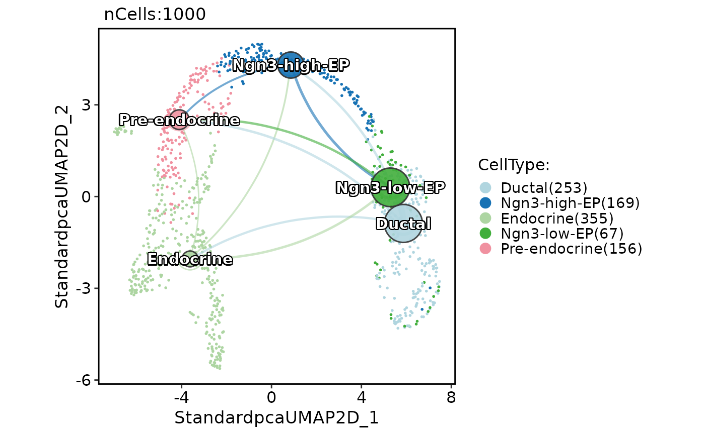
CCCNetworkPlot(
pancreas_sub,
method = "CellChat",
condition = "ConditionA",
plot_type = "pathway",
signaling = "MK"
)
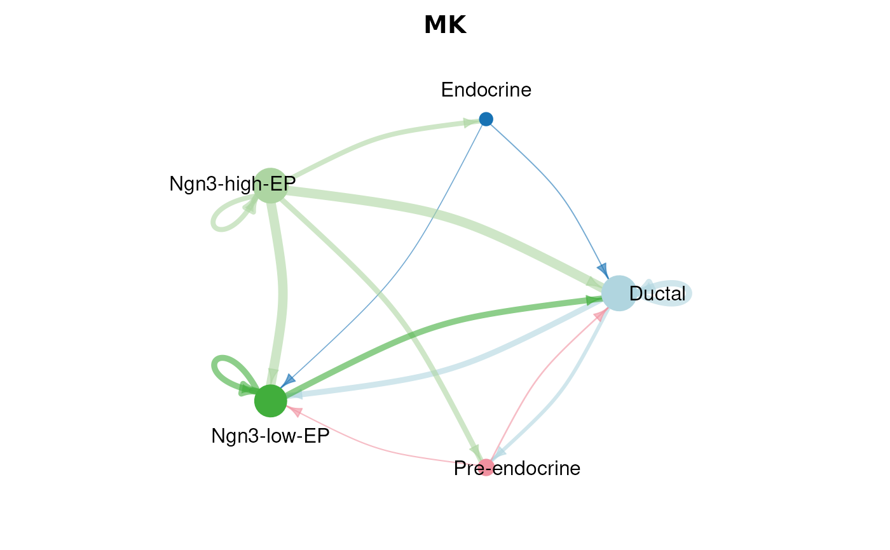
 CCCNetworkPlot(
pancreas_sub,
method = "CellChat",
condition = "ConditionA",
plot_type = "individual_lr",
signaling = "MK",
pairLR.use = "MDK_SDC1"
)
CCCNetworkPlot(
pancreas_sub,
method = "CellChat",
condition = "ConditionA",
plot_type = "individual_lr",
signaling = "MK",
pairLR.use = "MDK_SDC1"
)
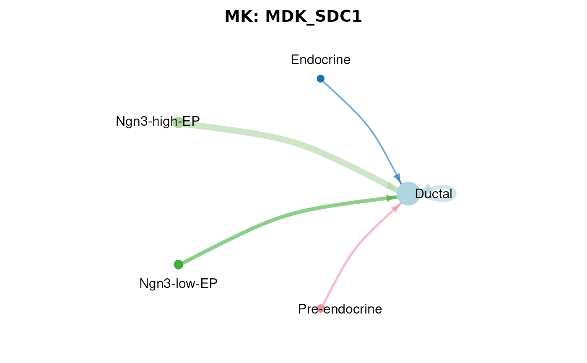
 CCCNetworkPlot(
pancreas_sub,
method = "CellChat",
condition = "ConditionA_vs_ConditionB",
plot_type = "diff_network",
measure = "count"
)
CCCNetworkPlot(
pancreas_sub,
method = "CellChat",
condition = "ConditionA_vs_ConditionB",
plot_type = "diff_network",
measure = "count"
)

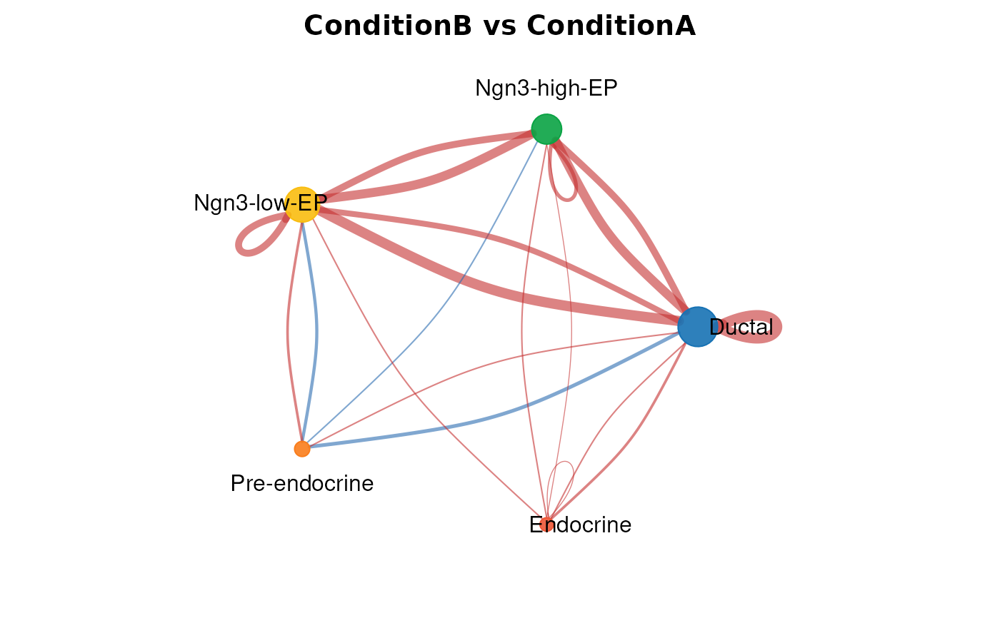